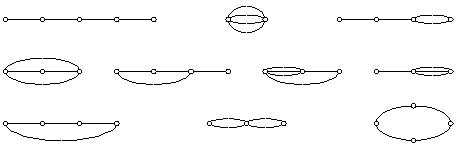

Problem H
Series-Parallel Networks
Input: standard input
Output: standard output
Time Limit: 5 seconds
Memory Limit: 32 MB
In this problem you are expected to count two-terminal series-parallel networks. These are electric networks considered topologically or geometrically, that is, without the electrical properties of the elements connected. One of the two terminals can be considered as the source and the other as the sink.
A two-terminal network will be considered series-parallel if it can be obtained iteratively in the following way:
q A single edge is two-terminal series-parallel.
q If G1 and G2 are two-terminal series-parallel, so is the network obtained by identifying the sources and sinks, respectively (parallel composition).
q If G1 and G2 are two-terminal series-parallel, so is the network obtained by identifying the sink of G1 with the source of G2 (series composition).
Note here that in a series-parallel network two nodes can be connected by multiple edges. Moreover, networks are regarded as equivalent, not only topologically, but also when interchange of elements in series brings them into congruence; otherwise stated, series interchange is an equivalence operation. For example, the following three networks are equivalent:
Similarly, parallel interchange is also an equivalence operation. For example, the following three networks are also equivalent:
Now, given a number N, you are expected to count the number of two-terminal series parallel networks containing exactly N edges. For example, for N = 4, there are exactly 10 series-parallel networks as shown below:

Input
Each line of the input file contains an integer N (1 £ N £ 30) specifying the number of edges in the network.
A line containing a zero for N terminates the input and this input need not be considered.
Output
For each N in the input file print a line containing the number of two-terminal series-parallel networks that can be obtained using exactly N edges.
Sample
Input
1
4
15
0
Sample
Output
1
10
1399068
(World Final Warm-up Contest,
Problem Setter: Rezaul Alam Chowdhury)